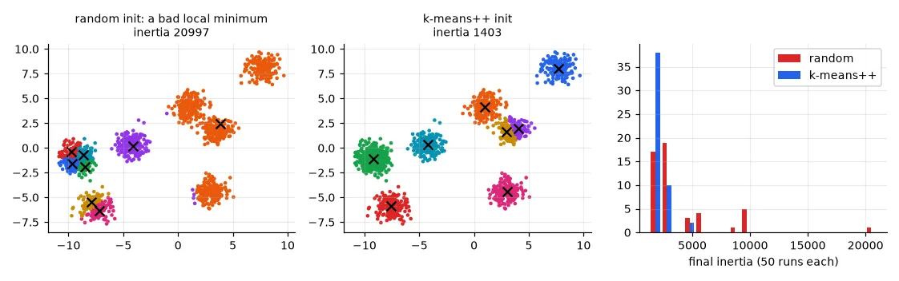
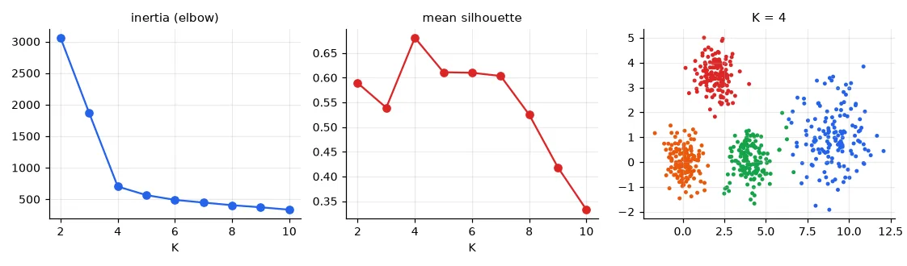
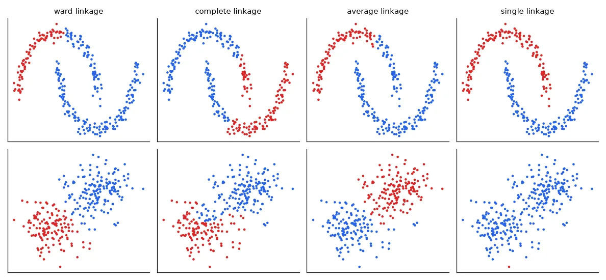
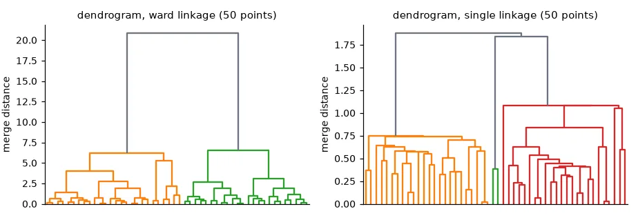
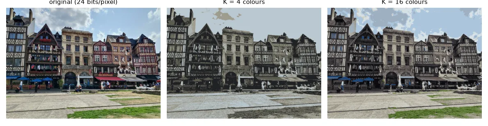

Unsupervised learning#
So far every sample came with a label. Clustering has only the \(\mathbf{x}_i\), and asks: do they form groups? Customers with similar behaviour, pixels of similar colour, sensor readings from the same regime. There is no "right answer" to check against, which makes clustering both useful for exploration and slippery to evaluate.
k-means#
k-means looks for \(K\) centres \(\boldsymbol{\mu}_1, \dots, \boldsymbol{\mu}_K\) and an assignment of every point to one of them, minimising the inertia — the total squared distance of each point to its centre:
Lloyd's algorithm alternates two steps, each of which can only decrease \(J\):
- Assign: each point goes to its nearest centre.
- Update: each centre moves to the mean of its points (the mean is what minimises the sum of squared distances).
It stops when nothing moves. Guaranteed to converge — but to a local minimum that depends on the starting centres.
def kmeans_pp_init(X, k, rng):
"""k-means++: each new centre is drawn with probability proportional to D(x)^2."""
centres = [X[rng.integers(len(X))]]
for _ in range(k - 1):
d2 = np.min(((X[:, None, :] - np.array(centres)[None]) ** 2).sum(-1), axis=1)
centres.append(X[rng.choice(len(X), p=d2 / d2.sum())])
return np.array(centres)
def kmeans(X, k, rng, init="k-means++", iters=100):
"""Lloyd's algorithm: assign each point to the nearest centre, move each centre to its points' mean."""
C = kmeans_pp_init(X, k, rng) if init == "k-means++" else X[rng.choice(len(X), k, replace=False)]
for _ in range(iters):
d2 = ((X[:, None, :] - C[None]) ** 2).sum(-1) # (n, k) squared distances
labels = d2.argmin(1)
new = np.array([X[labels == j].mean(0) if np.any(labels == j) else C[j] for j in range(k)])
if np.allclose(new, C):
break
C = new
inertia = d2[np.arange(len(X)), labels].sum() # sum of squared distances to the centre
return labels, C, inertia
k-means++ chooses the starting centres one at a time, each drawn with probability proportional to its squared distance \(D(\mathbf{x})^2\) to the nearest centre already chosen. Far-away points are likely picks, so the initial centres tend to be spread over the different groups.
X, y_true = make_blobs(n_samples=1500, centers=8, cluster_std=0.7, random_state=3)
rng = np.random.default_rng(0)
inert = {m: [kmeans(X, 8, rng, init=m)[2] for _ in range(50)] for m in ("random", "k-means++")}
best = KMeans(8, n_init=10, random_state=0).fit(X).inertia_
for m, v in inert.items():
v = np.array(v)
print(f"{m:10s}: inertia median {np.median(v):7.1f}, worst {v.max():7.1f}, "
f"runs within 1% of the best known ({best:.1f}): {np.mean(v < 1.01 * best):.0%}")
random : inertia median 2362.0, worst 20996.6, runs within 1% of the best known (1325.3): 14%
k-means++ : inertia median 1405.3, worst 4686.9, runs within 1% of the best known (1325.3): 18%

k-means++ makes disasters rarer and the typical result much better, but even it lands in a local minimum most of the time on this 8-blob problem. That is why scikit-learn runs k-means several times (n_init) and keeps the lowest inertia. Always do the same.
On fixing the seed
My lab report concluded that k-means++ "with a random seed" is preferred because it is "more predictable and reproducible". Two different things are mixed there. A fixed random_state makes a run reproducible (same numbers every time), whatever the initialisation. k-means++ makes runs better on average. Neither guarantees the global optimum; several restarts do most of the work.
How many clusters?#
\(K\) is an input of k-means, and the inertia always decreases when \(K\) grows (with \(K = N\) it is zero). Two common heuristics:
- The elbow: plot the inertia against \(K\) and look for the point where adding a cluster stops paying off.
- The silhouette: for each point, \(a\) = mean distance to its own cluster, \(b\) = mean distance to the nearest other cluster, \(s = (b - a)/\max(a, b)\). Close to 1: well inside its cluster; near 0: on a border; negative: probably in the wrong cluster. Average over all points and pick the \(K\) with the highest score.
Xk, _ = make_blobs(n_samples=600, centers=[[0, 0], [4, 0], [2, 3.5], [9, 1]], cluster_std=[0.6, 0.6, 0.6, 1.2],
random_state=1)
ks = range(2, 11)
inertias, silhouettes = [], []
for k in ks:
km = KMeans(k, n_init=10, random_state=0).fit(Xk)
inertias.append(km.inertia_)
silhouettes.append(silhouette_score(Xk, km.labels_))
print("silhouette by K:", {k: round(s, 3) for k, s in zip(ks, silhouettes)})
silhouette by K: {2: 0.589, 3: 0.539, 4: 0.681, 5: 0.611, 6: 0.61, 7: 0.603, 8: 0.525, 9: 0.419, 10: 0.333}

Here both agree. On real data they often don't, and K = 2 frequently wins the silhouette simply because two big blobs are "well separated" at a coarse scale. The honest answer is that the number of clusters depends on the scale you care about — and on what you will do with them.
Hierarchical clustering#
Agglomerative clustering starts with every point as its own cluster and repeatedly merges the two closest clusters. "Closest" between two groups needs a definition — the linkage:
- single: distance between their two closest points;
- complete: between their two farthest points;
- average: average over all pairs;
- Ward: the merge that increases the total within-cluster variance the least (k-means' criterion).
Xm, ym = make_moons(n_samples=300, noise=0.06, random_state=0)
Xg, yg = make_blobs(n_samples=300, centers=[[0, 0], [3, 3]], cluster_std=1.0, random_state=0)
for name, data in [("moons", Xm), ("two gaussians", Xg)]:
line = []
for link in ("ward", "complete", "average", "single"):
lab = AgglomerativeClustering(n_clusters=2, linkage=link).fit_predict(data)
sizes = np.bincount(lab)
line.append(f"{link} {sizes.min()}/{sizes.max()}")
print(f"{name:13s} cluster sizes:", ", ".join(line))
moons cluster sizes: ward 82/218, complete 129/171, average 98/202, single 150/150
two gaussians cluster sizes: ward 138/162, complete 128/172, average 143/157, single 1/299

No linkage is best: single linkage finds elongated shapes but is ruined by a few points bridging two groups; Ward finds compact, similarly-sized blobs, like k-means. The whole merge history is a tree, the dendrogram; cutting it at a given height gives the clusters at that scale, which is a nice way of postponing the choice of \(K\).

Application: colour quantisation#
A colour image is a set of pixels, each a point in 3-D RGB space. Run k-means on the pixels, then replace every pixel by its cluster centre: the image now uses only \(K\) colours (a palette), and each pixel can be stored as a \(\lceil\log_2 K\rceil\)-bit index into it.
img = np.asarray(Image.open(U.path("rouen.jpg")).convert("RGB")) # (576, 800, 3) uint8
pixels = img.reshape(-1, 3).astype(np.float64) # one sample per pixel, 3 features
sample = pixels[np.random.default_rng(0).choice(len(pixels), 20000, replace=False)]
quantised = {}
for k in (2, 4, 8, 16):
km = KMeans(k, n_init=4, random_state=0).fit(sample) # learn the palette on a sample
labels = km.predict(pixels)
quantised[k] = km.cluster_centers_[labels].reshape(img.shape).astype(np.uint8)
bits = np.ceil(np.log2(k))
ratio = 24 / bits
print(f"K = {k:2d}: {bits:.0f} bits/pixel instead of 24 -> compression x{ratio:.0f}, "
f"RMSE {np.sqrt(np.mean((quantised[k].astype(float) - img) ** 2)):.1f} grey levels")
K = 2: 1 bits/pixel instead of 24 -> compression x24, RMSE 33.0 grey levels
K = 4: 2 bits/pixel instead of 24 -> compression x12, RMSE 20.9 grey levels
K = 8: 3 bits/pixel instead of 24 -> compression x8, RMSE 14.8 grey levels
K = 16: 4 bits/pixel instead of 24 -> compression x6, RMSE 11.0 grey levels

(The palette itself costs \(K \times 24\) bits, negligible here.) This is how GIF images work, and the same "vector quantisation" idea is used to compress the embeddings of neural networks.
Exercises#
- Quantise in the Lab colour space instead of RGB (
skimage.color.rgb2lab). Distances in Lab are closer to perceived differences. Do the 4-colour results look better? - k-means assumes round clusters of similar size. Generate three elongated Gaussian clouds (apply a linear transform to blobs) and compare k-means with a Gaussian mixture model (
sklearn.mixture.GaussianMixture). - Implement single-linkage clustering from scratch with a minimum spanning tree: build the MST of the points (Prim's algorithm) and remove its \(K-1\) longest edges.